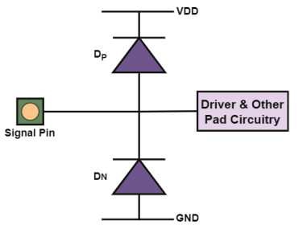
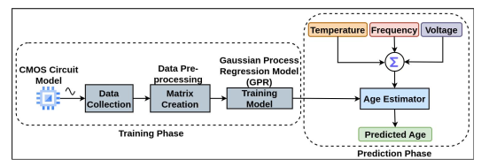
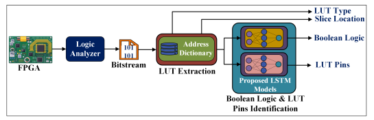
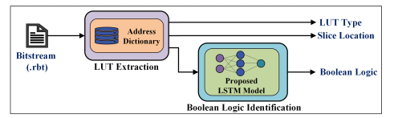
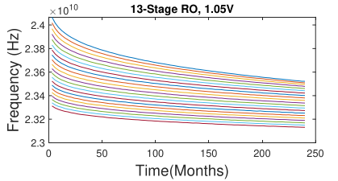

Academic Journey
Research Focus
Bridging hardware architecture and hardware security through Bitstream Reverse Engineering and Hardware Trojan Detection. Utilizing Machine Learning to secure global IC supply chains.
Career Journey
Project Scientist | IIT Delhi
Architected IoT nodes for environmental sensing, focusing on low-power communication.
Project Assistant | CSIR-CEERI, Pilani
Hardware acceleration for video codecs and memory access optimization for video surveillance system.
Publication Record
Leveraging IO Pad Protection Diodes for Recycled IC Detection and Age Estimation Using Polynomial Regression
Novel methodology for age estimation of ICs via protection circuitry.
View Article
Noninvasive Methodology for the Age Estimation of ICs Using Gaussian Process Regression
Novel methodology for age estimation of ICs using RO sensor.
View Article
REVBiT 2.0: REVerse Engineering of BiTstream for LUT Extraction, Boolean Logic, and Pin Combination Identification
Novel methodology for LUT information extraction from bitstream.
View Article
REVBiT: REVerse Engineering of BiTstream for LUT Extraction & Logic Identification
Novel methodology for LUT information extraction from bitstream.
View Article
Operational Age Estimation of ICs using Gaussian Process Regression
Novel methodology for age estimation of ICs using RO sensor.
View Article
Intellectual Property
Reverse Engineering of Bitstream for LUT Extraction and Boolean Logic Identification using Deep Neural Network
An automated framework for identifying logic structures within FPGA configuration files using deep learning models.
A Method for Extracting a Look-Up Table and Determining a Boolean Function
A specialized methodology for hardware-level Boolean recovery and functional mapping of FPGA resources.
Teaching
Digital Circuits
TA. focusing on the digital design using combinational and sequential systems.
Introduction to HDL
Instructor/TA. Practical sessions on FPGA prototyping using AMD Xilinx Vivado and RTL optimization.